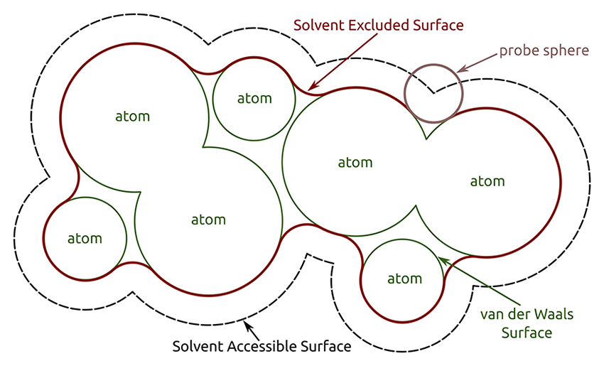

The surface command creates and displays
molecular surfaces,
either atomically detailed solvent-excluded surfaces (default) or
lower-resolution Gaussian surfaces.
Each surface is initially colored to match the average cartoon color of the
residues it encloses, even if the cartoons are not displayed.
See also:
shape,
topography,
surface operations,
per-model clipping,
show,
preset,
color,
measure,
sym,
volume,
volume operations,
Actions menu,
Molecule Display icons:

 ,
convex hull recipe
,
convex hull recipe
|  |
| Image courtesy of Sebastian Daberdaku |
By default, the surfaces are made to enclose only the residues in biopolymer chains, grouped by chain ID. Typically, this gives a separate molecular surface for each peptide or nucleic acid chain, and specifying a subset of the atoms in the chain will show/hide their patches within the context of the entire chain; for example, no patches will be shown for atoms that are completely buried inside the chain.
The surface showPatches command applies to pre-existing surfaces only, whereas surface (without showPatches) creates a new molecular surface as needed. However, if the intent is to switch between surface types (SES and GS) or to create a new surface with default parameters, closing an existing surface first is recommended, otherwise some of its settings may be retained. The surface close command removes the molecular surface models specified directly by model number, or all molecular surface models that enclose any of the specified atoms. The command ~surface is the same as surface hidePatches.
Surface display style (solid, mesh, or dot) can be adjusted with surface style.
Usage: surface atom-spec1 [ enclose atom-spec2 ] [ include atom-spec3 ] [ replace true | false ] [ probeRadius rad ] [ resolution r [ level l ]] [ gridSpacing s ] [ update true | false ] [ sharpBoundaries true | false ] [ visiblePatches N ]
Options for surface creation can be categorized as:
The enclose option can be used to specify a different set of atoms (atom-spec2) to enclose within a single surface, for example, to coalesce biopolymer chains with different chain IDs into a single molecular envelope.
The include option can be used to force including atoms that would otherwise be ignored (residues not within a biopolymer chain, such as ligands, solvent, and ions) into the same envelope as the biopolymer atoms with the same chain ID. For convenience, however, if atom-spec1 contains only such atoms, they will be surfaced separately (grouped by chain ID) and the include option is not needed.
The replace option (default true) indicates removing all previously created surface models that enclose any of the same atoms as the current surface. Successive uses of the surface command with replace false can produce multiple surface models that enclose the same set of atoms or different but overlapping sets of atoms. Surface model number assignments are discussed below.
Aside from how atoms are grouped, molecular surface parameters can be specified with the following options:
The default values apply to the initial creation of a surface, but when the surface command acts on an existing surface, only the parameters explicitly specified are changed.
The sharpBoundaries option (default true for an SES, default false for a Gaussian surface) adjusts the triangulation of the surface to produce abrupt and relatively straight boundaries between per-atom patches. This significantly reduces the sawtooth appearance where adjacent per-atom patches differ in color or display status (hidden vs. shown). A molecular surface will not retain atomic associations unless sharp boundaries are used.
The visiblePatches option indicates hiding all but the N largest connected surface patches (per surface model) for the specified atoms; by removing the visual clutter of small patches, this can significantly enhance viewing of pocket surfaces. Ranking to determine the largest is based on surface area, including any portions hidden by clipping. See also: surface dust
surface
– display the surface of each biopolymer chain in each model
surface #1
– display the surface of each biopolymer chain in model 1
surface #1:5-38
– display the surface patch(es) for residues 5-38 in each chain of model 1
surface hide #1/A:5-38
– hide the surface patch(es) for residues 5-38 in chain A of model 1
surface :10-20 visible 1
– display the largest surface patch for residues 10-20 in each chain
surface close /b
– close (delete) the surface model for chain B
surface close #1.2
– close (delete) the surface with model number 1.2
surface ligand @<5 visible 1 – display the largest surface patch per biopolymer chain for atoms within 5Å of ligand
surface ligand
– display surface(s) for ligand (divided up by chain ID)
surface #1-3
– display the surface of each biopolymer chain in models 1-3
surface #1-3 enclose #1-3
– display a single surface enclosing all biopolymer chains in models 1-3; the first #1-3 could be omitted, as a blank specification there is interpreted as “all”
surface :10-20 enclose /a-c
– display the surface patch(es) for residues 10-20 within a single surface that encloses chains A-C
surface #1 include :hem
– display a surface that encloses each biopolymer chain in model 1 along with its respective HEM residue (for example, in PDB 4HHB)
surface enclose #1 include :hem
– display a single surface that encloses all the biopolymer chains and HEM residues in model 1
Usage: surface style surface-spec ( solid | mesh | dot )
The representation of a surface model can be solid, mesh, or dot. This applies to surface models in general, including volume isosurfaces, and always applies to the entire model. See also: surface squaremesh, volume, transparency
Surface operations apply to surface models in general, including volume isosurfaces. See also: marker fromMesh, volume operations
Adjust capping, in which planar caps are drawn to hide the interior of a surface sliced by a clipping plane. Capping can be on (true, initial default) or off (false). The offset distance d is how far to displace caps from the clipping plane (initial default 0.01 Å). Some displacement is needed, or the cap itself can be clipped (invisible) depending on floating-point rounding errors and the specific graphics hardware being used. If d is large, however, the mismatch between the cap and the cut edge of the surface will be evident. The subdivision value s indicates the fineness of triangulation, which affects the appearance of caps when they are multicolored, such as by map value or by zone. Higher values of s give finer triangulations (minimum 0.0, initial default 1.0). The mesh option controls whether surface caps are shown for mesh-style surfaces (when capping is on), initial default false. See also: Clipping preferences, per-model clipping• surface dust surface-spec [ size s ] [ metric area | area rank | size | size rank | volume | volume rank ] [ update true | false ]
Hide smaller blobs (disconnected parts) of a surface to simplify the display of noisy density. Blobs smaller than size s (default 5) will be hidden. The size units depend on the metric, which can be any of the following (enclosed in single or double quotation marks if it includes spaces):• surface invertShown surface-specThe corresponding Map icon
- area – surface area
- area rank – rank by largest area (a value of N indicates showing the N largest blobs)
- size (default) – bounding box dimension (largest of X, Y, Z)
- size rank – rank by largest size
- volume – enclosed volume
- volume rank – rank by largest volume
uses a size value ten times the grid spacing of the map. The graphical implementation, Hide Dust, includes a slider for adjusting the size limit.
Size measurements will include any blob parts that have been undisplayed or hidden by zoning or clipping, and blobs at or above the cutoff size will be displayed completely (although possibly still clipped) even if they had been hidden beforehand. The update option (default true) indicates whether to update automatically when the shape of the surface changes.
The surface undust command turns off hiding smaller blobs, as does using surface showall or surface zone. To show only the dust for masking purposes, first hide the dust, then use surface invertShown. See also: marker connected
For the specified surfaces, hide triangles that are shown and show those that are hidden. This is useful after hiding dust to show only the dust, allowing the density within to be masked.• surface showall surface-spec
Show all mesh lines and triangles in the specified surface(s) except where hidden by clipping.• surface smooth surface-spec [ factor f ] [ iterations i ] [ inPlace true | false ]
Smooth the specified surface(s) by moving each vertex toward the average position of its neighboring vertices (those connected by triangle edges). In each of i iterations (default 2), each vertex is moved a fraction f (default 0.3) of the way toward the average position of its neighbors. The inPlace option indicates whether to overwrite the existing surface (default false, meaning to create a new surface instead of overwriting the existing one). This command will generally “shrink” a surface, for example, make an enclosed surface contain a smaller volume. Note that a molecular surface can be smoothed without shrinkage by using a smaller gridSpacing value.• surface splitbycolor surface-spec
Create a new model containing separate surface models for the different colors of the original surface, named piece 1, piece 2, etc. Only triangles with all three vertices having the same color are included in the surface model for that color; boundary triangles with vertices of differing colors are put into another surface model named multicolor. The original surface model is left unchanged. Creating the pieces as separate models allows measuring their surface areas using measure area or Measure Volume and Area.• surface squaremesh surface-spec
In the specified surface(s), show only the mesh lines parallel to the X, Y, or Z axis. Return to showing all mesh lines with surface showall. See also: surface style• surface transform surface-spec [ scale s ] [ rotate angle ] [ move vector-spec ] [ center point-spec ] [ axis vector-spec ] [ coordinateSystem N ]
Scale, rotate, and/or shift surface models. Scaling about the center is applied first, then rotation about the center and axis, and then translation (shifting). Scaling can be done with a multiplicative scale factor s. The rotate option indicates a rotation of angle degrees about the specified center and axis, and move indicates a shift along the specified vector (by 1.0 distance unit if the vector specification does not include length). The center for scaling and rotation defaults to the center of the bounding box of the displayed part of the first specified surface, and the axis defaults to Z. The coordinate system for interpreting center, axis, and shift coordinates is indicated by reference model number. By default, the coordinate system of the first specified surface is used.• surface zone surface-spec nearAtoms atom-spec [ distance cutoff ] [ maxComponents N ] [ bondPointSpacing s ] [ update true | false ]
Show only parts of the surface(s) within cutoff (default 2.0 Å) of any atom in atom-spec. If bondPointSpacing is specified, use points spaced s Å apart along bonds in addition to the atoms to define the zone. The maxComponents option indicates hiding all but the N largest connected surface patches in the zone; by removing the visual clutter of small patches, this can significantly enhance viewing of pocket surfaces. Ranking to determine the largest is based on maximum dimension (along X, Y, or Z for a given patch), including any portions within the zone that are hidden by clipping. If maxComponents is not supplied, all patches within the zone will be shown. The update option (default true) indicates whether to update automatically when the shape of the surface changes.The surface unzone command turns off zoning, as does using surface showall or surface dust.
The graphical implementation, Surface Zone, includes a slider for adjusting the cutoff distance. See also: select zone, volume zone, zone, zone atom specification
Model numbers. Molecular surface models are treated as “children” of the corresponding atomic model. For example, surface models based on atoms in model #1 will be numbered #1.1, 1.2, etc., and closing #1 will also close those surface models. However, if a single surface model is based on atoms from more than one model (for example, generated with surf enclose #1,2), it will be assigned a number at the same level as the atomic models (for example, #3).
Patch boundaries. Per-atom surface patch boundaries are defined by associating each surface point with an atom. In a solvent-excluded surface, each point is associated with the atom with the smallest distance normalized by radius (the atom with the smallest d/r, where d is the distance between the surface point and the atom center, and r is the atomic VDW radius). In a Gaussian surface, each point is simply associated with the closest atomic center.
{kind=link}